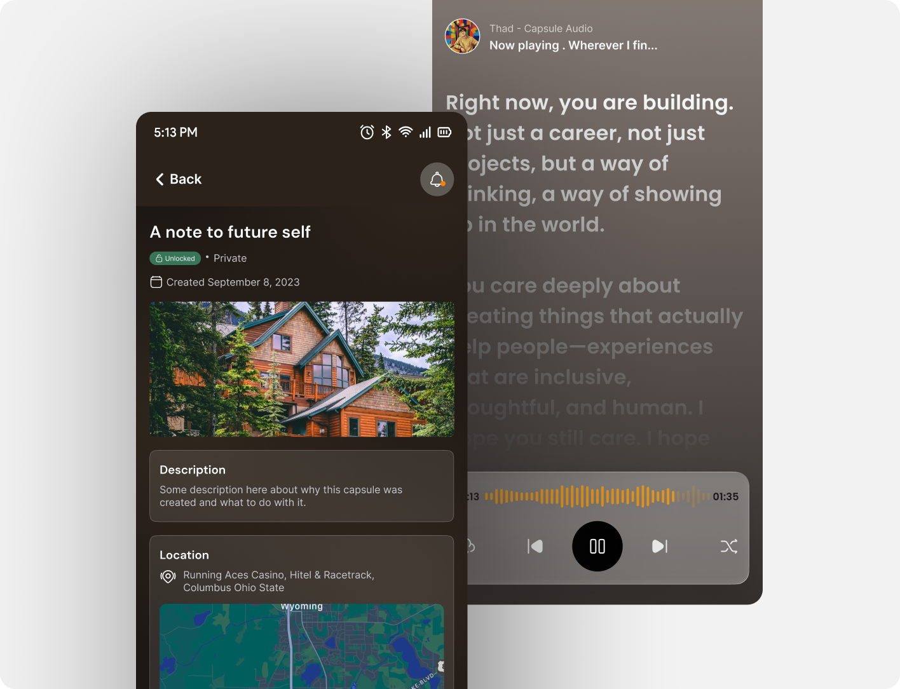
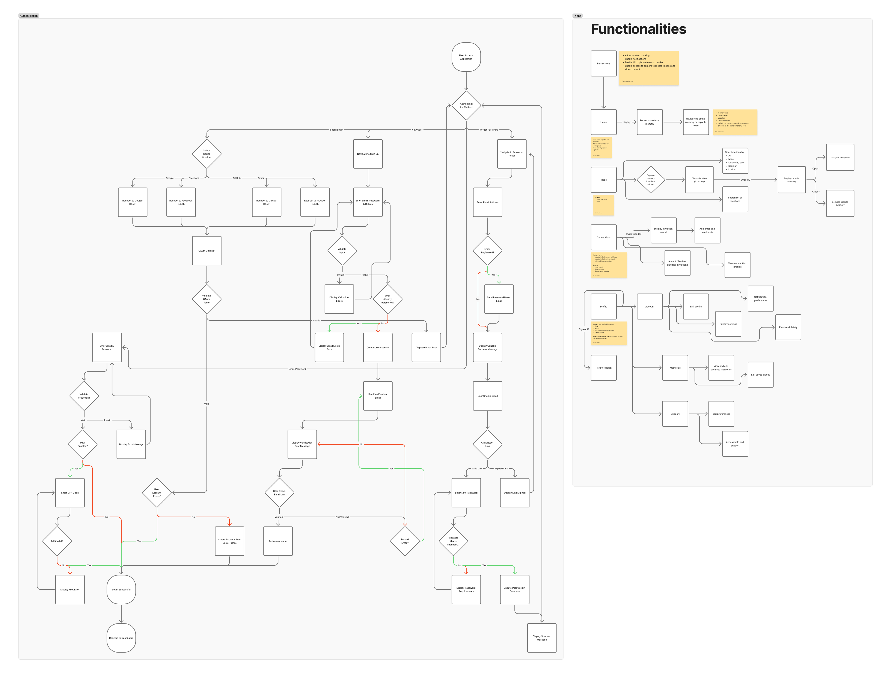
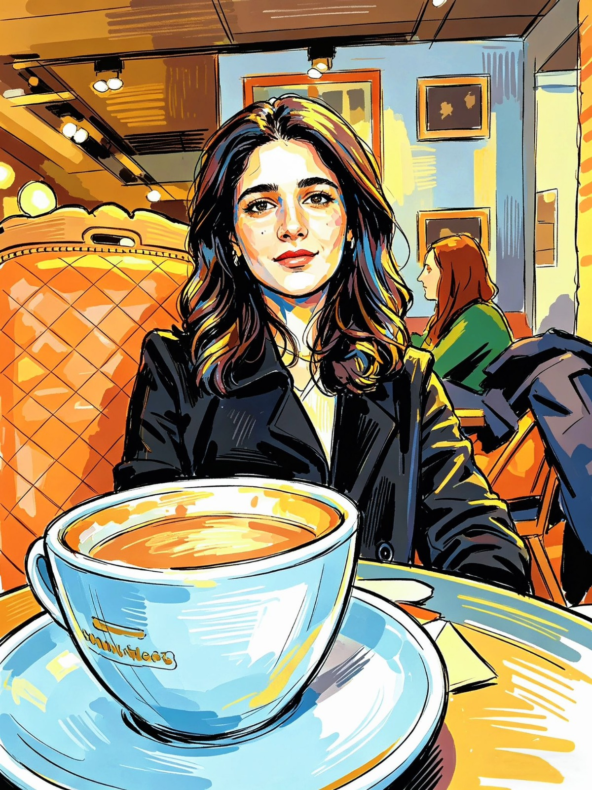
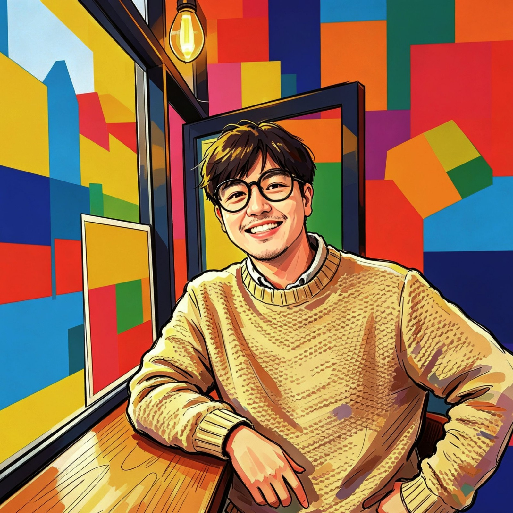
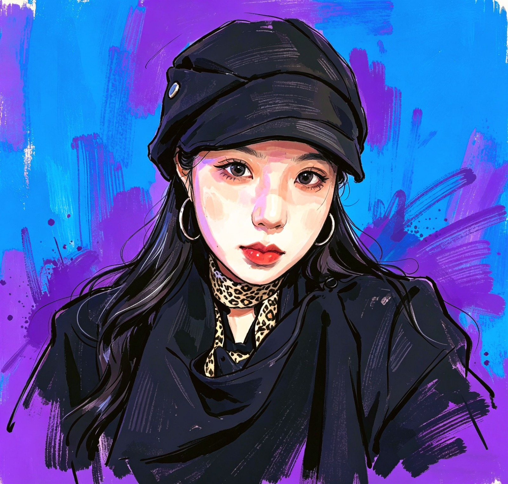

Echo Capsule - Digital Memory Capsules
Digital legacy & memory preservation, Conditional / layered unlock UX, Figma prototyping & HTML/CSS build

Project overview
Echo Capsule is a mobile app concept for preserving personal memories such as photos, audio, video, and written messages, inside digital capsules that unlock later, under conditions the creator chooses. This was a team project, built with three teammates from initial concept through a working interactive prototype.
The idea started from a question about how people's memories are preserved after they're gone. We imagined a parent recording messages for milestones they won't live to see, or friends reconnecting through memory on an anniversary. The name comes from the physics of an echo - a sound sent out, delayed, and returned to whoever needs it most. That became the guiding metaphor: a memory sent into the future, for someone else to receive.
Use cases
- Legacy messages: a terminally ill parent records video messages for each of their children's future milestones like their first day of university, a wedding, the birth of a grandchild - unlocked by date, and by the recipient's biometrics in future iterations.
- Memory anniversaries: a group of college friends create a shared capsule on graduation day. A year later, it only unlocks once every participant is physically within 500 metres of their old campus, using the app's geolocation feature.
- Personal time capsule: a user records a New Year's Eve reflection, set to unlock the following year, but only once they've physically returned to the same city - a letter to their future self with a condition attached.
Competitive research
We audited five existing memory-preservation products including FutureMe, Google Photos Memories, StoryWorth, 1 Second Everyday, and AfterNote, against onboarding, media support, unlock mechanisms, sharing, and emotional design.
Every one of them fell short in the same places: no biometric unlock, no location-based unlock for shared capsules, thin multimedia support (usually one or two formats), utilitarian interfaces with no emotional design language, and no real model for collaborative or multi-recipient capsules.
That gap - rich multimedia plus layered, conditional unlocking - became Echo Capsule's core differentiator, and shaped six user stories spanning a terminally ill parent, a reunion of college friends, someone grieving a partner, a privacy-conscious user, someone returning home after years abroad, and a group of friends building a shared trip capsule.
Heuristic framework
We used Nielsen's ten usability heuristics throughout, weighting three most heavily given the emotional stakes of the content:
- Error prevention: deleting a sealed capsule containing legacy messages is a serious, often irreversible loss, so that destructive action had to be made deliberately difficult and recoverable.
- User control & freedom: users needed full agency to edit conditions, reschedule, or delete content any time before a capsule was sealed.
- Aesthetic & minimalist design: the interface had to stay out of the way of the content's emotional weight, never being decorative for its own sake.
Brainstorming
We ran structured sessions combining “How Might We” questions - how do we make creating a capsule feel meaningful rather than administrative, and how do we make sure it reaches the right person decades later - with affinity mapping to sort features into must-have and nice-to-have. That process surfaced the layered-unlock idea early: a capsule could require a date, a location, and a password together, and the app would need to distinguish creator, contributor, and recipient as separate roles for shared capsules.
We also mapped the risks head-on - GDPR, discomfort with sharing location data, time zone handling across long delays, and the complexity of jointly-owned capsules - and how we'd mitigate them through feedback, in-context instruction, and interface contrast.


User flow & navigation
We mapped two full navigation trees: authentication (sign up, social login, MFA, password reset) and the in-app experience (home, capsule creation, maps, connections, and account settings). The core in-app journey moves from onboarding through capsule creation by adding media, setting unlock conditions, inviting recipients, sealing the capsule, a waiting period, an unlock notification when conditions are close to being met, and finally a verification step (biometric, location, or password) before the capsule opens.

Wireframes to high-fidelity prototype
Low-fidelity wireframes were sketched on paper first, focused purely on layout, hierarchy and flow before any visual styling, covering capsule creation, the location picker, and the friends or invite screens. Those wireframes became a full high-fidelity Figma prototype built on reusable components such as capsule cards with status states, media thumbnails, buttons, and capsule creation forms, to keep the visual language consistent across every screen.
The dark, warm palette was a deliberate choice against the cold, utilitarian interfaces we'd found in competitor research; the goal was for the interface itself to feel like it was holding something precious.
View Figma prototype ↗ · Try the interactive HTML/CSS prototype ↗

Interactive prototype & tech choices
After Figma, we built a working interactive version in HTML5, CSS3 and vanilla JavaScript, hosted on GitHub Pages, to validate the interaction model in an actual browser and device environment. We chose a no-framework stack deliberately, allowing the prototype to be opened on any device with no build step, which mattered for quick testing and sharing with reviewers.
We used Figma for the design system itself, valuing its collaborative editing and component state management, which made assembling the interactive prototype more coherent. For the avatar feature concept, we used Procreate to hand-illustrate sample avatars representing each team member, an early exploration of a personalization feature planned for future iterations.
The team
The hand-illustrated sample avatars represent each team member: Ebi-Yaa, Nimra, Thad and Yushan.



Pricing model
We designed a free tier covering basic journaling, local image storage, and standard text tools to build the user base, alongside a premium tier ($4.99/month) unlocking encrypted cloud backup, custom themes, memory export tools like PDF journals or photo albums, and ad-free use; priced in line with comparable lifestyle and productivity apps.
What we'd do differently
We leaned heavily on internal review rather than testing with real users during the wireframe and hi-fi stages, which risked blind spots that only external participants would have caught. Structured usability sessions with at least five outside participants at the wireframe stage would have surfaced issues earlier. The interactive prototype's scope also grew past the original plan as new ideas came up mid-build, and we had to scope back to a core set of screens, leaving some flows living only in Figma rather than the interactive version. A tighter MVP definition from the start would have avoided that scramble.
What we learned
Emotional stakes change every design decision - colour, animation timing and copy all carry more weight when the content might be a dying parent's last message than when it's a shopping list. Designing for a gap of months, years or decades between creation and consumption also forced different thinking about feedback, confirmation and trust than most present-moment apps require.
Biometric and location-based unlocking carries real anxiety - what happens if Face ID fails at the worst possible moment, or GPS is imprecise - making robust fallback paths (backup passwords, manual location override) as important as the primary unlock flow. And role clarity in shared capsules (creator, contributor, recipient) isn't intuitive by default; it needs to be reinforced repeatedly in the UI to avoid confusion over ownership.
Future considerations
Fully implemented biometric verification is the clearest next step beyond the current time and location-based unlocking, along with working through the GDPR implications of long-lived stored data - what happens to a capsule's data over years, and what “unclaimed” data should mean in that context. More broadly, this project pushed us to design for memory, mortality and connection rather than the present moment most mobile UX defaults to; designing for emotional weight, for time, and for trust in ways that will carry into future work.